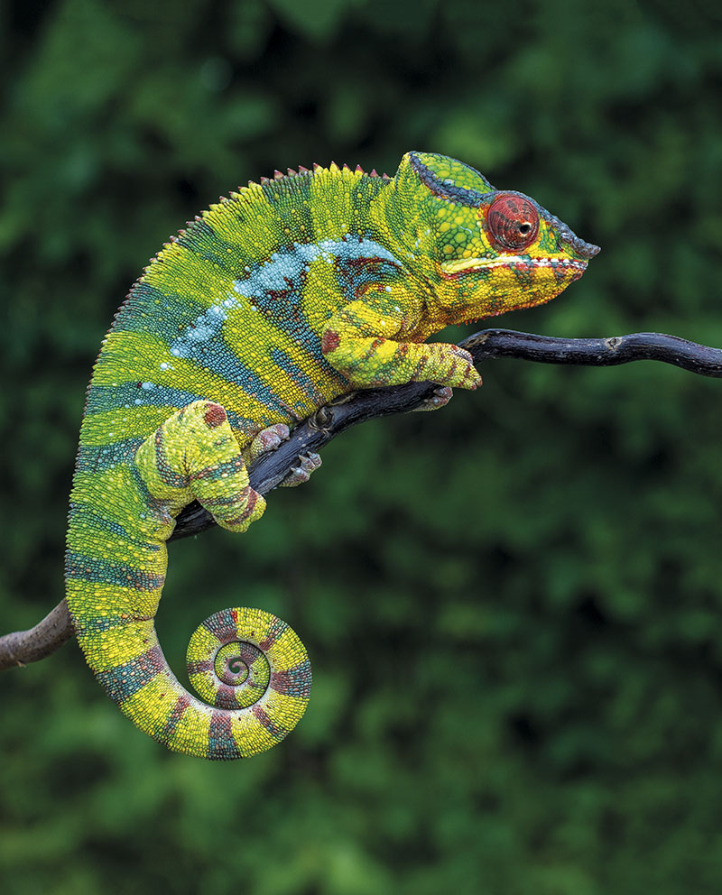
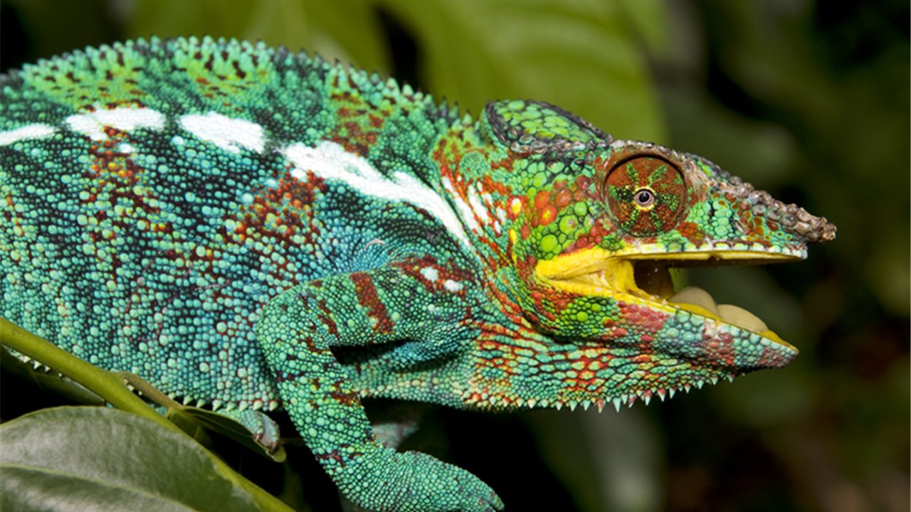

Antes que nada... ¿Por que apreder sobre camaleones?
Debes saber por que los camaleones son animales de diminuto tamaño que pueden cambiar su
color dependiendo aveces de como esta su estado de animo, aparte pueden
ser animales domesticos, y en resumen, son geniales!!!! :D
¿Que es en realidad un camaleon?
Los camaleones son una familia, Chamaeleonidae, de pequeños saurópsidos (reptiles) escamosos. Existen cerca de 161 especies de camaleones, la mayor parte de ellas en África al sur del Sáhara. En América se llama a menudo camaleones a lagartos de la familia de los anoles, que no guardan ningún parentesco especial con los verdaderos camaleones.

Caracteristicas fisicas.
Los camaleones varían grandemente en tamaño, desde los pequeños camaleones de la familia Brookesia los cuales tienen desde 2,9 cm de largo Brookesia micra hasta los grandes de 80 cm Calumna parsonii. La especie más pequeña vive en la isla de Nosy-bé en Madagascar es Brookesia minima y en su fase adulta difícilmente supera el centímetro y medio. Muchos de ellos tienen adornos en la cabeza o en la cara como protuberancias nasales e incluso cuernos como en el caso de Trioceros jacksonii o largas crestas en la parte superior de la cabeza como Chamaeleo calyptratus. Muchas especies presentan dimorfismo sexual y los machos suelen estar más adornados que sus pares femeninas.

Reproduccion
La mayoría de camaleones son ovíparos, pero existen también especies ovovivíparas . Una vez que la hembra está lista para poner los huevos(3-6 semanas después de la fecundación), desciende hacia el suelo y comienza a excavar un hueco de 5 a 30 centímetros dependiendo la especie. Luego, entierra los huevos y deja el lugar. La cantidad de huevos depositados varía de especie en especie desde el Brookesia con 2 a 4 huevos hasta el Chamaeleo calyptratus ponen de 30 a 60 huevos de media.